Tema 2.1 - Fundamentos del lenguaje Kotlin
Kotlin es el lenguaje recomendado por Google para Android. En este tema aprendes sus fundamentos ejecutando código de verdad: los 14 bloques Código N son escenas de una app real (FumetoPMDM) y cada captura muestra la salida que Kotlin imprimió de verdad, no un deseo.
Materiales: Sintaxis completa · Guía para Java devs
Deberías saber ya: programación estructurada (bucles, condiciones, funciones) y, si vienes de Java, sus colecciones —este tema hace continuas comparaciones con Java porque es la vía más rápida para entender por qué Kotlin es como es.
0. Por qué Kotlin y no seguir en Java
Kotlin es un lenguaje de propósito general, multiplataforma, tipado estáticamente y compilado (a bytecode JVM). Desde 2017 es el lenguaje preferred de Google para Android y hoy el desarrollo nativo Android se escribe en Kotlin.
Comparad el mismo "hola mundo" en los dos lenguajes:
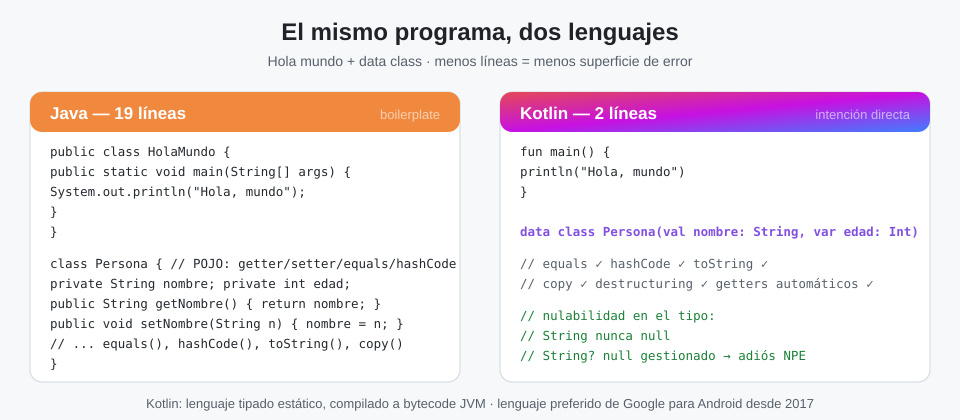
Sus ventajas reales, una por una:
- Sintaxis concisa y expresiva: menos plantillas (boilerplate), más intenciones. Un
data classde una línea sustituye 60 líneas de POJO Java. - Seguridad de tipos mejorada: la nulabilidad se declara en el tipo (
String?), lo que elimina de raíz el error más caro de Java: elNullPointerExceptionsorpresa. - Interoperabilidad total con Java: puedes llamar código Java desde Kotlin y viceversa, y migrar archivo a archivo.
- Inferencia de tipos: escribes el tipo cuando aporta información; el compilador hace el resto.
- Menos verbosidad en cosas simples: funciones de una línea, expresiones
whenen lugar de cadenas deelse-if, cadenas multilínea naturales, getters/setters automáticos. - Enfoque moderno: funciones de orden superior, lambdas, expresiones lambda, colecciones con operaciones funcionales (
filter,map...).
Y su coste honesto: si vienes de Java, la sintaxis te va a parecer "demasiado limpia" una semana, y luego no vas a querer volver.
Cómo funciona esta lección: los 14 bloques marcados como Código N son exactamente las funciones de la app de escenas FumetoPMDM (misma mecánica que en DI: am start --ei codigo N). El proyecto envuelve cada escena en un arnés de laboratorio que redirige System.out para pintar los println en pantalla:
// Arnés de laboratorio: ejecuta el bloque capturando su stdout.
fun consola(bloque: () -> Unit): List<String> {
val buf = ByteArrayOutputStream() // Buffer donde irá a parar el stdout
val viejo = System.out // Guardamos el stdout original
System.setOut(PrintStream(buf)) // Redirigimos System.out al buffer
bloque() // EJECUTAMOS el código didáctico
System.setOut(viejo) // Restauramos el stdout
return String(buf.toByteArray()).lines().filter { it.isNotBlank() }
}
Todo lo demás (cada escena completa, comentada línea a línea) es el código que ves tal cual.
1. Estructura de un programa Kotlin
Un programa Kotlin es una sucesión de sentencias u operadores, cada uno en su línea (el punto y coma es opcional). El ejecutable arranca siempre en main(), que pertenece a un fichero .kt y puede vivir dentro o fuera de una clase.
fun main() { // punto de entrada del programa
println("Hola, mundo") // imprime una línea en la salida estándar
}
| Elemento | Descripción |
|---|---|
| Palabras clave | Palabras especiales del lenguaje: val, fun, if |
| Identificadores | Nombres de variables, funciones, clases... |
| Literales | Valores fijos: 1.3, true, "Hola" |
| Operadores | +, ==, &&... |
| Comentarios | Notas que el compilador ignora |
Para ejecutar el código tienes dos caminos: Android Studio (proyecto o Scratch) o el Playground online (https://play.kotlinlang.org/), que además enseña el bytecode generado —útil para ver que tu data class se traduce a cientos de líneas de bytecode JVM.
Los comentarios documentan sin afectar a la ejecución:
// Comentario de una sola línea
/* Comentario de
bloque */
/** Comentario de documentación (KDoc): genera documentación como Javadoc. */
Comenta el porqué, no el qué
El qué ya lo dice el código; el porqué no. // precio con IVA aporta más que // suma 21%.
2. Variables y constantes: var y val
val y solo cambia a var cuando demuestres que necesitas reasignar. El compilador te avisa si te pasas.val |
var |
|
|---|---|---|
| Palabra del lenguaje | value | variable |
| Cambiables tras la asignación | No | Sí |
| Equivalente Java | final |
variable normal |
| Uso | Por defecto, siempre que puedas | Acumuladores, bucles, estado |
val msg: String = "Hello, World" // inmutable
var count: Int = 0 // mutable
count += 1 // var: se puede reasignar
val x = 10 // inferencia: el compilador deduce Int
val y = 10.2 // Double inferido
Que val sea inmutable es una promesa fino a un punto
val impide reasignar la referencia, no mutar el objeto apuntado: val lista = mutableListOf(1) te deja hacer lista.add(2). La referencia no se mueve; el contenido, sí. En el examen esto pregunta mucho.
Razones de la regla de oro: menos bugs (lo inmutable no cambia a tus espaldas), más legibilidad (lo que ves es lo que hay), fácil razonamiento y más seguro en concurrencia (un val no necesita locks).
📺 Escena — Código 1 (función esc01 exacta de la app):
fun esc01(): List<String> = consola {
// Un programa Kotlin arranca en main(); aquí simulamos ese cuerpo.
println("Hola, Kotlin") // salida estándar
val pi = 3.14 // val: inmutable, Double inferido
var contador: Int = 0 // var: mutable, tipo anotado
contador += 1 // los var sí se reasignan
println("pi=$pi contador=$contador")
// En Kotlin no hace falta punto y coma al final de línea
println("regla de oro: val por defecto; var solo si hace falta")
}
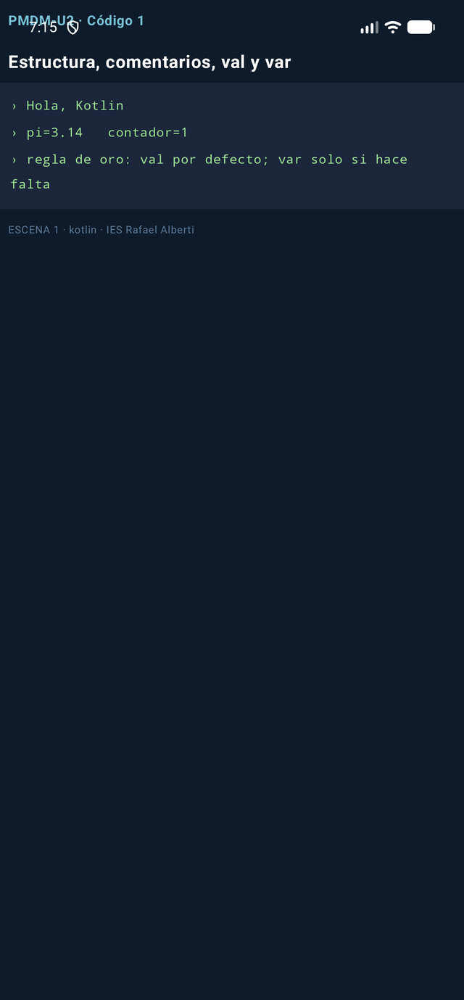
Qué imprime y por qué: Hola, Kotlin, luego pi=3.14 contador=1 (el += 1 mutó el var) y la línea de la regla de oro. Fíjate: $pi es un string template —Sección 6—.
3. Null-safety: el fin del NullPointerException
En Java, cualquier referencia puede valer null y solo descubres dónde al estrellarse en tiempo de ejecución. En Kotlin el sistema de tipos distingue String (nunca null) de String? (nullable): si una función puede devolver null, está obligada a decirlo en su firma, y el compilador no te deja usar el resultado sin manejarlo.
// Java: la NPE aparece al ejecutar
String m = null;
System.out.println(m.length()); // 💥 NullPointerException
// Kotlin: el tipo declara la nulabilidad y el compilador corta
val m: String? = null
println(m?.length ?: 0) // → 0 (nunca llega a romper)
Las tres herramientas que se usan el 100% de las veces:
| Operador | Nombre | Qué hace |
|---|---|---|
?. |
safe call | Aplica el acceso solo si no es null; si no, toda la expresión vale null |
?: |
Elvis | Valor de reserva cuando la parte izquierda es null |
!! |
aserción nula | "Aposto a que no es null" — si pierdes la apuesta, NPE |
📺 Escena — Código 2 (función esc02 + auxiliar, exactas):
fun puedeSerNulo(caso: Int): String? = if (caso % 2 == 0) "par" else null
fun esc02(): List<String> = consola {
val s: String? = puedeSerNulo(3) // String? admite null
val len = s?.length ?: 0 // safe call + elvis: si null, 0
println("s=$s → s?.length ?: 0 da $len")
val t: String? = puedeSerNulo(4) // ahora sí trae valor
println("t=$t → longitud ${t?.length ?: 0}")
val forzado = t!! // !! afirma que no es null (NPE si miente)
println("con !! (sabiendo que t no es null): \"$forzado\"")
println("Java usaba ternarios y NPEs sorpresa; Kotlin lo declara en el tipo")
}
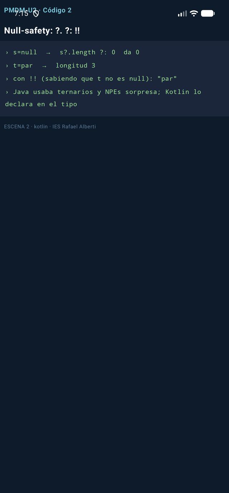
Con caso=3 la función devuelve null: s?.length no ejecuta length y Elvis da 0. Con caso=4, t vale "par" y el !! es seguro porque tú lo sabes —y el compilador te cree—.
4. Tipos básicos
Todos los tipos son objetos (nada de primitivos sueltos a lo Java) y las conversiones numéricas son explícitas: no existe la coerción implícita.
| Tipo | Tamaño | Rango |
|---|---|---|
Long |
64 bits | -2⁶³ … 2⁶³-1 |
Int |
32 bits | -2³¹ … 2³¹-1 |
Short |
16 bits | -32768 … 32767 |
Byte |
8 bits | -128 … 127 |
Double |
64 bits (IEEE 754) | ±4.9e-324 … ±1.7e+308 |
Float |
32 bits (IEEE 754) | ±1.4e-45 … ±3.4e+38 |
Char |
16 bits | cualquier carácter Unicode |
Boolean |
8 bits | true / false |
String |
— | secuencia inmutable de caracteres |
val maximo: Int = Int.MAX_VALUE // 2147483647
val minimo: Int = Int.MIN_VALUE // -2147483648
val grande: Long = 150_000_000_000 // sufijo implícito por el tipo; guiones bajos legibles
val pi = 3.14159 // Double inferido
val letra: Char = 'A' // ¡comilla simple! "A" sería String
val ok: Boolean = true
5. Operadores
Funcionan como en Java/C, con dos diferencias notables: no hay operador de incremento para asignar (x++ existe, pero en expresiones devuelve el valor viejo como siempre) y == compara contenidos (equivale al .equals() de Java); para comparar referencias se usa ===.
| Tipo | Operadores |
|---|---|
| Aritméticos | + - * / % |
| Relacionales | < <= > >= == != === |
| Lógicos | && \|\| ! |
Precedencia (de mayor a menor):
| Precedencia | Operadores |
|---|---|
| Mayor | ( ) |
x++ x-- |
|
+x -x ++x --x ! |
|
* / % |
|
+ - |
|
<< >> >>> |
|
.. ..< ..= |
|
is as |
|
> >= < <= |
|
in !in |
|
| Menor | == != === !== |
📺 Escena — Código 3 (función esc03 exacta):
fun esc03(): List<String> = consola {
val a = 10 // Int inferido
val b = 3
val ratio = a.toDouble() / b // conversión EXPLÍCITA: sin ella, 3
println("10/3 entero=3, pero toDouble()/3 = $ratio")
var x = 5
x++ // incremento postfijo
val ok = (10 % 3 == 1) && (2 * 2 == 4) // % resto, && lógico
println("x tras x++ → $x ok=$ok")
val n: Long = 7
val d = n.toFloat() // sin coerción implícita: toFloat()
println("Long $n → Float $d (Kotlin NO convierte tipos sin preguntar)")
val dos: Int = 'A'.code // Char → su código
println("'A'.code = $dos y comparar == compara CONTENIDO, no referencia")
}
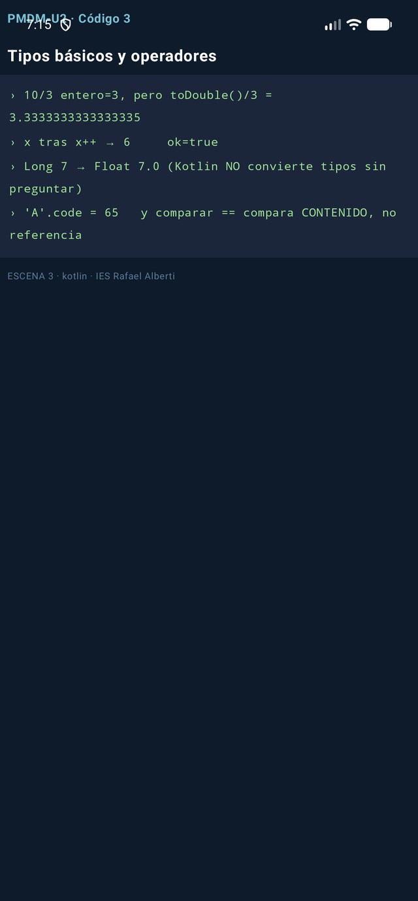
6. Cadenas de caracteres
Las String son inmutables: cada operación devuelve una cadena nueva; la original no se toca. La interpolación $variable y ${expresión} sustituye a la concatenación con + de Java.
val nombre = "Ana"
val s = "Hola, $nombre. Dentro de un año: ${2026 + 1}" // templates
val multilinea = """
Multilínea "literal"
sin escapar comillas
""".trimIndent() // raw string + reindentado
| Método | Qué devuelve |
|---|---|
length |
Longitud de la cadena |
get(i) / [i] |
Carácter en la posición i |
substring(i, j) |
Subcadena de i a j (sin incluir j) |
uppercase() / lowercase() |
Copia en mayúsculas / minúsculas |
trim() |
Copia sin espacios de borde |
split(delim) |
Lista de trozos al partir por delimitador |
replace(a, b) |
Copia con a sustituido por b |
contains(s) / in |
true si la contiene |
isEmpty() / isBlank() |
Vacía / vacía o solo espacios |
startsWith(s) / endsWith(s) |
Prefijo / sufijo |
indexOf(s) / lastIndexOf(s) |
Primera / última posición |
📺 Escena — Código 4 (función esc04 exacta):
fun esc04(): List<String> = consola {
val nombre = "Ana"
println("Hola, $nombre. Año que viene: ${2026 + 1}") // interpolación + expresión
val s = " Kotlin "
val t = s.trim().uppercase() // las String son inmutables: devuelven nuevas
println("""trim().uppercase() → "$t"""")
val ok = "ko" in t.lowercase() // in = contains, case-sensitive
println("\"ko\" en \"${t.lowercase()}\" → $ok")
val sub = "Kotlin".substring(0, 3) // subcadena [0,3)
println("substring(0,3) → \"$sub\"")
val partes = "uno;dos;tres".split(";") // partir
println("split(\";\") → ${partes.joinToString(" | ")}") // unir con joinToString
println("isBlank() en \" \" → ${" ".isBlank()} isEmpty() en \"\" → ${"".isEmpty()}")
val multi = """
Multilínea "literal"
sin escapar comillas
""".trimIndent()
println("raw string con ${multi.lines().size} líneas")
}
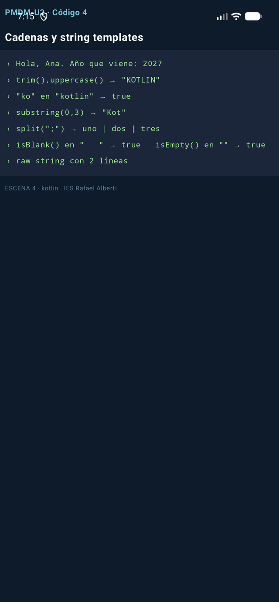
7. Funciones
Una función es un bloque de código que resuelve una tarea. La sintaxis mínima: fun nombre(param: Tipo): Retorno = expresión.
fun suma(a: Int, b: Int): Int = a + b // cuerpo-expresión: return implícito
fun maxDe(a: Int, b: Int) = if (a > b) a else b // el tipo de retorno se infiere
fun despedirse() = println("Adiós") // devuelve Unit (≈ void)
Parámetros con nombre, en el orden que quieras, y por defecto:
fun saludar(nombre: String, titulo: String = "Sr./Sra.") = println("Hola, $titulo $nombre")
saludar("Ana") // usa el default
saludar(nombre = "Ana", titulo = "Dra.") // nombrados: el orden da igual
vararg admite N argumentos del mismo tipo, y las funciones pueden anidarse (solo existen dentro de su contenedora):
fun media(vararg notas: Double) = notas.average()
fun procesar(nums: List<Int>): Int {
fun esPar(n: Int) = n % 2 == 0 // función local
return nums.filter(::esPar).sum()
}
📺 Escena — Código 5 (las cuatro funciones anteriores + esc05, todas exactas):
fun suma(a: Int, b: Int): Int = a + b // cuerpo-expresión, sin return
fun sumaConReturn(a: Int, b: Int): Int { return a + b } // forma clásica, equivalente
fun media(vararg notas: Double) = notas.average() // vararg: N argumentos
fun <T> primero(lista: List<T>): T? = lista.firstOrNull() // genérica
fun procesar(nums: List<Int>): Int { // local function
fun esPar(n: Int) = n % 2 == 0 // solo visible aquí dentro
return nums.filter(::esPar).sum()
}
fun saludar(nombre: String, titulo: String = "Sr./Sra.") =
println("Hola, $titulo $nombre") // parámetro por defecto
fun esc05(): List<String> = consola {
println("suma(2,3) = ${suma(2, 3)} sumaConReturn(2,3) = ${sumaConReturn(2, 3)}")
println("media(1.0, 2.0, 3.0) = ${media(1.0, 2.0, 3.0)}")
println("primero(listOf(7,9)) = ${primero(listOf(7, 9))} primero(vacía) = ${primero(emptyList<Int>())}")
println("procesar([1..6]) = ${procesar(listOf(1, 2, 3, 4, 5, 6))} ← usó la función local esPar")
saludar("Ana") // usa el valor por defecto
saludar(nombre = "Ana", titulo = "Dra.") // argumentos NOMBREADOS (orden libre)
saludar(titulo = "Dr.", nombre = "Luis")
}
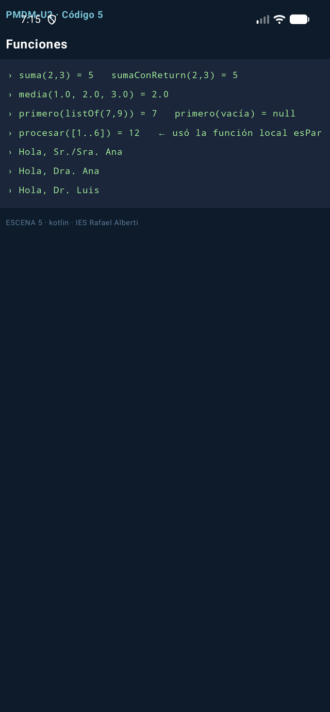
7.1. Funciones de orden superior y lambdas
Una función de alto nivel (HOF) es la que toma otra función como parámetro o la devuelve —la base de la programación funcional en Kotlin—.
Una lambda es una función anónima que se puede asignar a una variable o pasar como argumento. Sintaxis: { parámetros -> cuerpo }; si tiene un único parámetro se llama it; y si el último parámetro de la función es una lambda, se puede sacar de los paréntesis (trailing):
val cuadrado = { n: Int -> n * n }
aplicaDosVeces(2, cuadrado) // 16: cuadrado(cuadrado(2))
aplicaDosVeces(3) { it + 1 } // 5: trailing lambda + it implícito
Una referencia (::nombre) usa una función nombrada donde se espera una lambda sin envolverla:
Los tipos de función se escriben (Entrada) -> Salida: (Int) -> Int, (String, String) -> Boolean, () -> Unit.
📺 Escena — Código 6 (función esc06 + auxiliares, exactas):
fun aplicaDosVeces(x: Int, f: (Int) -> Int): Int = f(f(x)) // HOF: recibe una función
fun esParNum(n: Int) = n % 2 == 0
fun esc06(): List<String> = consola {
val cuadrado = { n: Int -> n * n } // lambda con parámetro tipado
println("aplicaDosVeces(2, cuadrado) = ${aplicaDosVeces(2, cuadrado)} ← (2²)² = 16")
println("aplicaDosVeces(3) { it + 1 } = ${aplicaDosVeces(3) { it + 1 }} ← trailing lambda + it")
val nums = listOf(1, 2, 3, 4)
println("nums.filter(::esParNum) = ${nums.filter(::esParNum)} ← referencia a función")
val transformador: (Int) -> String = { n -> "n=$n" } // una función es un VALOR
println("lambda en variable: ${transformador(42)}")
println("tipos de función: (Int) -> Int · (String, String) -> Boolean · () -> Unit")
}
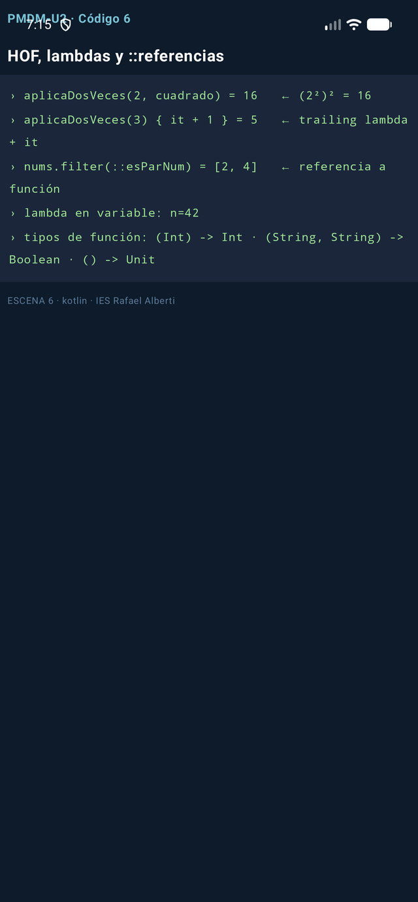
8. Estructuras de control
if / else: es una expresión
En Kotlin if devuelve un valor —adiós al ternario ?: de Java (que en Kotlin significa otra cosa)—:
when: el switch potenciado
when sustituye a switch. Se ejecuta el primer caso que coincida; los when que devuelven valor obligan a else, y si el sujeto es un enum no hace falta porque el compilador comprueba que los cubres todos:
val mensaje = when (opcion) {
1, 2 -> "baja" // varios valores por rama
in 3..10 -> "media" // rangos
!in 10..20 -> "alta" // y negaciones
else -> "invalid option"
}
when { // sin sujeto: condiciones arbitrarias
x !is Int -> println("no es Int")
x == 5 -> println("smart cast: aquí x ya es Int sin casteos")
}
Bucles
for recorre rangos (a..b inclusivo, a until b exclusivo, downTo, step) e iterables; withIndex da posición y valor; while y do-while funcionan como siempre, con break y continue:
for (i in 1..5) { } // 1 2 3 4 5
for (i in 10 downTo 0 step 2) { } // 10 8 6 4 2 0
for ((i, v) in lista.withIndex()) { }
while (x < 3) { }
do { } while (x < 3)
📺 Escena — Código 7 (función esc07 exacta):
fun esc07(): List<String> = consola {
val a = 7; val b = 9
val mayor = if (a > b) a else b // if como EXPRESIÓN que devuelve valor
println("if expresión: mayor de $a y $b → $mayor")
val op = 2
val mensaje = when (op) { // when: el primer caso que encaja gana
1 -> "Alta"; 2 -> "Baja"; 3 -> "Consulta"
else -> "opción inválida"
}
println("when(op=$op) → $mensaje")
val x = 5
val y: Any = "hola"
when { // when sin sujeto: rangos y smart cast
x in 1..10 -> println("when: $x está en 1..10")
y is String -> println("smart cast: kotlin lo trata como String, len=${y.length}")
else -> println("otro caso")
}
var suma = 0
for (i in 1..5) suma += i // rango inclusivo
println("for 1..5 → suma=$suma")
println("for 10 downTo 0 step 2 → " + (10 downTo 0 step 2).joinToString(","))
val items = listOf("a", "b", "c")
println("withIndex → " + items.withIndex().joinToString { (i, v) -> "$i→$v" })
var k = 0
while (k < 3) k++ // while/do-while/break/continue: como en Java
println("while → k=$k")
}
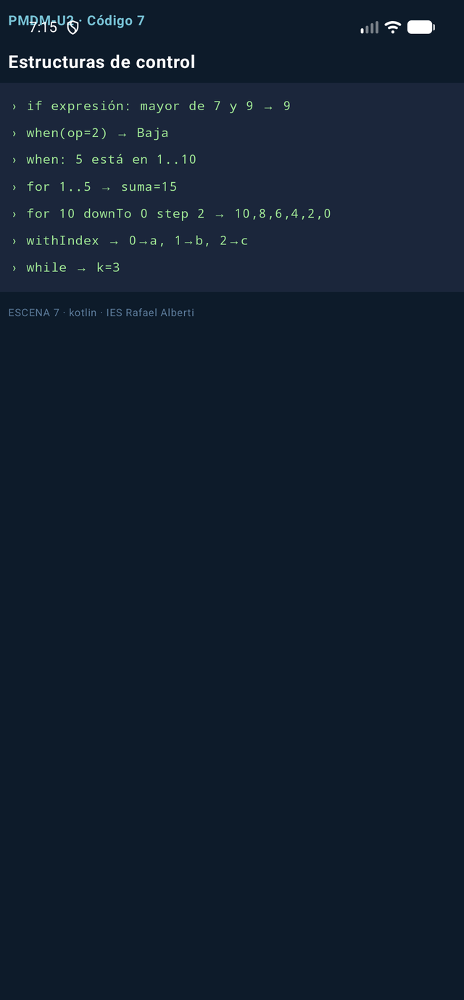
9. Practica: mini-testing con require()
require(condición) { "mensaje" } lanza IllegalArgumentException si la condición falla: es la forma más rápida de autoverificar un ejercicio sin montar un framework de tests.
Ejercicio resuelto (mejorado sobre el PDF): implementa areaTriangulo y cuadrado, y autoverifícate con require:
📺 Escena — Código 8 (funciones esc08 + auxiliares, exactas):
fun cuadrado(n: Int) = n * n
fun areaTriangulo(base: Double, altura: Double): Double {
require(base > 0 && altura > 0) { "base y altura deben ser positivas" } // precondición
return base * altura / 2
}
fun esc08(): List<String> = consola {
require(cuadrado(3) == 9) { "3² debe ser 9" } // si falla: IllegalArgumentException
println("require pasado: cuadrado(3)=${cuadrado(3)}")
try {
areaTriangulo(-2.0, 3.0) // precondición rota a propósito
} catch (e: IllegalArgumentException) {
println("require lanza IllegalArgumentException: ${e.message}")
}
println("Tests OK ← así se autoverifica un ejercicio sin framework")
}
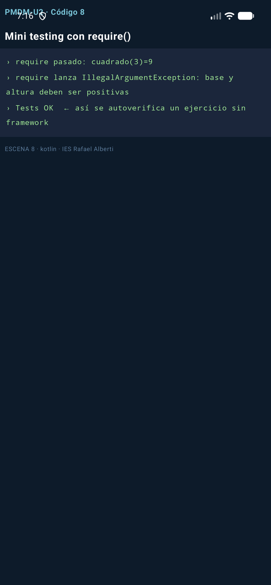
El PDF proponía escribir tu propio assertEquals en Java. Comparad: Kotlin ya trae la precondición en el contrato de la función (require), y el try/catch demuestra que el mecanismo de fallo funciona. Bonus: implementad el assertEquals de toda la vida y sustituid los require por él.
10. Arrays
Un Array<T> es una colección ordenada de tamaño fijo (se crea con un tamaño o con literales) pero de contenido mutable. Hay variantes primitivas (IntArray, CharArray...) que evitan el boxing.
val a = arrayOf(1, 2, 3) // Array<Int>
val b = Array(3) { i -> i * 2 } // [0, 2, 4] — inicializado por lambda
val c = IntArray(3) { it * 2 } // variante primitiva: más ligera
a[0] = 10 // contenido mutable; el tamaño, no
val matriz = Array(3) { IntArray(3) } // arrays de arrays (matrices)
| Operación | Array | List |
|---|---|---|
| Cambiar tamaño | ✗ | ✓ |
| Cambiar contenido | ✓ | en MutableList, ✓ |
contentToString() / toString() |
contentToString() (o sale el hash) |
toString() pinta [1, 2, 3] |
📺 Escena — Código 9 (función esc09 exacta —cubre además el mapa mental de inmutabilidad de colecciones):
fun esc09(): List<String> = consola {
val a = arrayOf(1, 2, 3) // Array<Int>: tamaño FIJO, contenido mutable
a[0] = 10
println("arrayOf → ${a.contentToString()} (a[0]=10) → a.toList() = ${a.toList()}")
val b = IntArray(3) { it * 2 } // primitivo especializado, sin boxing
println("IntArray(3) { it*2 } = ${b.contentToString()}")
val nums = listOf(5, 2, 8, 2) // colección inmutable
val paresOrdenados = nums.filter { it % 2 == 0 }.sorted() // funcional: NO muta
println("filter+sorted → $paresOrdenados original intacto: $nums")
println("inmutables: List/Set/Map · mutables: MutableList/MutableSet/MutableMap")
}
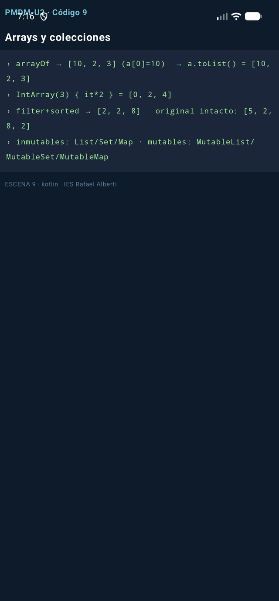
11. Colecciones: el mapa mental
Una colección es un contenedor de elementos para almacenar, recuperar y procesar datos. Kotlin divide las cabeceras en inmutables (interfaz de solo lectura) y mutables (añaden operaciones de cambio):
| Interfaz | Qué es | Crear | Mutar |
|---|---|---|---|
List<T> |
Ordenada, duplicados permitidos | listOf(...), List(5){...} |
add set removeAt clear (Mutable) |
Set<T> |
Sin duplicados | setOf(...), sortedSetOf(...) |
add remove clear (Mutable) |
Map<K,V> |
Pares clave→valor | mapOf("a" to 1), toMap() |
put set remove clear (Mutable) |
Y sobre cualquiera funcionan las operaciones funcionales (devuelven resultados nuevos, no tocan el original): filter, map, sorted, distinct, any/all, sum/max, slice, chunked, partition...
El error de concepto nº1 del tema
filter no elimina elementos de la lista: devuelve otra lista. La original queda intacta. Confundir sortedBy (copia nueva) con sortBy (en sitio, solo mutable) es el fallo que más se repite en los exámenes —Sección 18—.
12. Listas: el tour completo
Crear: listOf(1,2,3) · mutableListOf(...) · List(5) { it*it } (tamaño + lambda) · (1..5).toList().
Acceder: size, first()/last() (y sus variantes OrNull que no revientan), xs[2], getOrNull(9), slice(1..2), take(2), isEmpty().
Mutar (solo MutableList): add(4), removeAt(0), xs[0] = 100, remove(2), clear() —y +=/-= que devuelven listas nuevas incluso en las inmutables—.
Transformar (inmutables siempre): filter, map, mapIndexed, filterIsInstance, filterNotNull (ojo: la nullabilidad tiene dos niveles: la lista y sus elementos), distinct, flatten, sorted, reversed, zip, associate.
Consultar: any/all, find/findLast, count, sum/average/max.
Convertir: toSet(), toMutableList(), toTypedArray(), toIntArray().
📺 Escena — Código 10 (función esc10 exacta):
fun esc10(): List<String> = consola {
println("List(5){it*it} → ${List(5) { it * it }} (1..5).toList() → ${(1..5).toList()}")
val xs = listOf(10, 20, 30, 40)
println("size=${xs.size} first=${xs.first()} xs[2]=${xs[2]} slice(1..2)=${xs.slice(1..2)}")
println("firstOrNull en vacía → ${emptyList<Int>().firstOrNull()} (first lanzaría)")
val ms = mutableListOf(1, 2, 3) // MutableList: sí se modifica
ms.add(99); ms.removeAt(0); ms[0] = 100
println("mutable add/removeAt/[0]=100 → $ms")
println("sin mutar: listOf(1,2)+3 → ${listOf(1, 2) + 3} · listOf(1,2,2)-2 → ${listOf(1, 2, 2) - 2}")
val ns = listOf(1, 2, 3, 4, 5)
println("map x2 → ${ns.map { it * 2 }} filter pares → ${ns.filter { it % 2 == 0 }}")
println("distinct → ${listOf(1, 2, 2, 3).distinct()} flatten → ${listOf(listOf(1, 2), listOf(3)).flatten()}")
println("sorted → ${listOf(5, 3, 9, 1).sorted()} any>4 → ${ns.any { it > 4 }} find>3 → ${ns.find { it > 3 }}")
val conNulos: List<Int?> = listOf(1, null, 3) // nullabilidad en DOS niveles
println("List<Int?> $conNulos → filterNotNull → ${conNulos.filterNotNull()}")
println("convertir: toSet() → ${listOf(1, 2, 2).toSet()} toIntArray() OK")
}
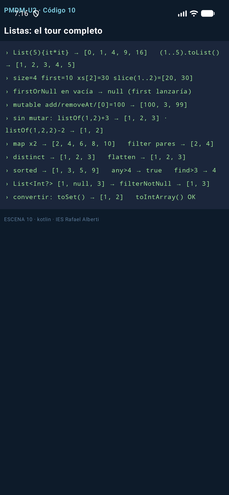
13. Mapas
Colecciones de pares clave→valor. Las claves son únicas; pedir una clave inexistente con corchetes devuelve null (no excepción) en los mapas inmutables, y getOrDefault/getOrElse te dan la vía cortés. mapOf conserva el orden de inserción (LinkedHashMap).
val precios = mapOf("pan" to 1.2, "leche" to 1.1) // inmutable: NO se puede put
val m = mutableMapOf("pan" to 1.2) // mutable
m["leche"] = 1.1 // añadir/actualizar con corchetes
val p: Double? = m["huevos"] // clave desconocida → null
val par = listOf("A", "B").zip(listOf(1, 2)).toMap() // construir desde listas
for ((k, v) in m) { } // desestructuración al iterar
📺 Escena — Código 11 (función esc11 exacta):
fun esc11(): List<String> = consola {
val precios = mutableMapOf("pan" to 1.2, "leche" to 1.1)
precios["leche"] = 1.25 // actualizar con corchetes
println("mutableMapOf → $precios")
println("\"huevos\" in precios → ${"huevos" in precios} containsKey(pan) → ${precios.containsKey("pan")}")
val x1: Double? = precios["huevos"] // clave inexistente → null, NO excepción
println("m[clave inexistente] → $x1 getOrDefault → ${precios.getOrDefault("huevos", 0.0)}")
println("getOrElse (cálculo diferido) → ${precios.getOrElse("huevos") { 0.0 * 99 }}")
println("total = values.sum() → ${precios.values.sum()}")
val mZip = listOf("A", "B", "C").zip(listOf(1, 2, 3)).toMap()
println("zip().toMap() → $mZip")
for ((k, v) in precios) println("destructuring: $k ⇒ $v")
println("mapOf devuelve LinkedHashMap: conserva el ORDEN de inserción")
}
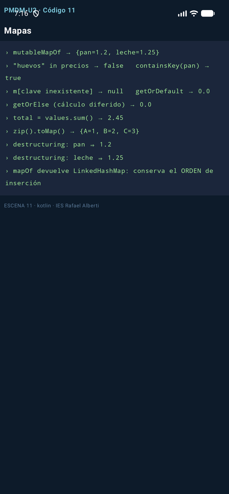
14. Enumeraciones
Un enum class define un conjunto cerrado de constantes con nombre: estados, roles, tipos. Cada constante es un singleton y puede llevar propiedades y funciones.
enum class Rol { ADMIN, EDITOR, LECTOR } // simple
enum class Nivel(val prioridad: Int) { // con datos
BAJO(1), MEDIO(2), ALTO(3); // el punto y coma abre el cuerpo
fun esCritico() = this == ALTO
}
println(Nivel.ALTO.name) // "ALTO" (nombre)
println(Nivel.ALTO.ordinal) // 2 (posición)
Nivel.entries // todas las constantes (sustituye al values() clásico)
📺 Escena — Código 12 (función esc12 + enums, exactas):
enum class Rol { ADMIN, EDITOR, LECTOR }
enum class Nivel(val prioridad: Int) { // enum con propiedad y función
BAJO(1), MEDIO(2), ALTO(3); // el punto y coma abre el cuerpo
fun esCritico() = this == ALTO
}
fun esc12(): List<String> = consola {
val r = Rol.ADMIN
println("role=$r name=\"${r.name}\" ordinal=${r.ordinal}")
println("Nivel.ALTO.prioridad=${Nivel.ALTO.prioridad} esCritico()=${Nivel.ALTO.esCritico()}")
println("todas las constantes: ${Nivel.entries.joinToString { "${it.name}(${it.prioridad})" }}")
val permiso = when (r) { // when EXHAUSTIVO sobre enum: sin else
Rol.ADMIN -> "puede todo"
Rol.EDITOR -> "escribir"
Rol.LECTOR -> "solo leer"
}
println("when sobre enum (sin else): ADMIN → $permiso")
println("cada constante es un singleton: útil para estados, roles y tipos cerrados")
}
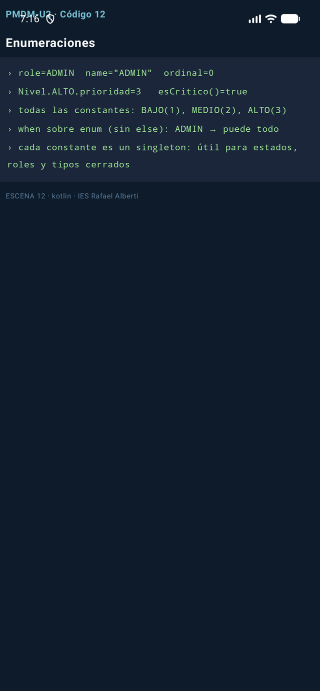
15. Programación orientada a objetos
Un objeto = estado (propiedades) + comportamiento (métodos); una clase = su plano de fabricación.
Con init para validar y constructor secundario que delega en el primario:
class Producto(val id: Int, val nombre: String, var precio: Double) {
init { require(precio >= 0) { "Precio negativo" } } // validación al construir
constructor(id: Int, nombre: String) : this(id, nombre, 0.0) // secundario → this(...)
}
Getters automáticos —y propiedades calculadas con get() que se evalúan en cada lectura—:
class Rectangulo(var ancho: Int, var alto: Int) {
val area: Int get() = ancho * alto // calculada al leerla, no cacheada
fun escalar(k: Int) { ancho *= k; alto *= k }
}
Las data classes le piden al compilador el trabajo pesado (equals, hashCode, toString, copy, desestructuración). La diferencia entre una clase normal y una data es la que hay entre comparar punteros y comparar contenidos:
class PersonaNormal(val nombre: String, var edad: Int)
data class Persona(val nombre: String, var edad: Int) // una línea = 60 líneas de Java
val a = Persona("Ana", 30); val b = Persona("Ana", 30)
a == b // true (equals estructural)
val c = a.copy(edad = 31) // copia cambiando solo un campo
val (n, e) = a // desestructuración vía component1/component2
Herencia: en Kotlin todo es final y no heredable por defecto; hay que marcar open en la base y override en la derivada. Las interface se implementan con la misma sintaxis que la herencia:
open class Animal(open val nombre: String) { open fun sonido() = "..." }
class Perro(override val nombre: String) : Animal(nombre) { // : = "hereda de"
override fun sonido() = "guau"
}
interface Volador { fun volar(): String }
class Pajaro(override val nombre: String) : Animal(nombre), Volador {
override fun volar() = "aleteo"
}
📺 Escena — Código 13 (todas las clases anteriores + esc13, exactas):
class Usuario(val id: Int, var nombre: String) // constructor primario en la cabecera
class Producto(val id: Int, val nombre: String, var precio: Double) {
init { require(precio >= 0) { "Precio negativo" } } // bloque de validación
constructor(id: Int, nombre: String) : this(id, nombre, 0.0) // secundario → delega
}
class Rectangulo(var ancho: Int, var alto: Int) {
val area: Int get() = ancho * alto // propiedad CALCULADA
fun escalar(k: Int) { ancho *= k; alto *= k } // método miembro
}
class PersonaNormal(val nombre: String, var edad: Int) // clase al uso
data class Persona(val nombre: String, var edad: Int) // data: añade mucho gratis
open class Animal(open val nombre: String) { open fun sonido() = "..." }
class Perro(override val nombre: String) : Animal(nombre) { // herencia: open/override
override fun sonido() = "guau"
}
interface Volador { fun volar(): String }
class Pajaro(override val nombre: String) : Animal(nombre), Volador {
override fun volar() = "aleteo"
}
fun esc13(): List<String> = consola {
val u = Usuario(1, "Ana")
u.nombre = "Ana María" // var sí, val no
println("Usuario → ${u.nombre} (val id inmutable, var nombre editable)")
val p = Producto(1, "Teclado") // usa el constructor secundario
println("secundario delega en primario: precio=${p.precio}")
val r = Rectangulo(2, 3); r.escalar(2)
println("Rectangulo(2,3).escalar(2) → area=${r.area} (get() calcula al leer)")
val a1 = PersonaNormal("Ana", 30); val a2 = PersonaNormal("Ana", 30)
println("class normal: a == b → ${a1 == a2} toString → ${a1.javaClass.simpleName}@${a1.hashCode().toString(16)}")
val b1 = Persona("Ana", 30); val b2 = Persona("Ana", 30)
println("data class: b == b → ${b1 == b2} toString → $b1")
val copia = b1.copy(edad = 31) // copia cambiando un campo
val (n, e) = b1 // desestructuración por componentN()
println("copy(edad=31) → $copia y (n,e) → $n, $e")
println("herencia: Perro → ${Perro("Luna").sonido()} Pajaro → ${Pajaro("Pio").sonido()}/${Pajaro("Pio").volar()}")
println("Kotlin es final por defecto: hereda solo de open/abstract")
}
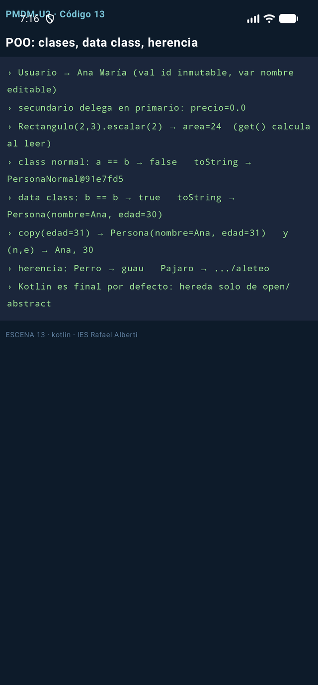
16. Colecciones de objetos: el CRUD completo
La técnica que vais a usar en cada práctica: una data class como modelo y MutableList como almacén, más las consultas funcionales del tema.
📺 Escena — Código 14 (función esc14 + modelo, exactas):
data class Libro(val id: Int, val titulo: String, val paginas: Int, val autor: String)
fun esc14(): List<String> = consola {
val libros = mutableListOf(
Libro(1, "Kotlin 101", 180, "Ana"),
Libro(2, "Compose", 220, "Luis"),
)
libros += Libro(3, "Coroutines", 200, "Ana") // += en mutableList
libros[0] = libros[0].copy(paginas = 190) // data class: copiar corregida
println("${libros.size} libros · el 1º con ${libros[0].paginas} págs (tras copy)")
println("filtrar por autor → ${libros.filter { it.autor == "Ana" }.map { it.titulo }}")
println("primero >200 págs → ${libros.firstOrNull { it.paginas > 200 }?.titulo}")
println("any con Compose → ${libros.any { it.titulo.contains("Compose") }}")
println("indexOfFirst Coroutines → ${libros.indexOfFirst { it.titulo == "Coroutines" }} (o -1)")
println("sortedBy págs → ${libros.sortedBy { it.paginas }.joinToString { it.titulo }}")
val orden = libros.sortedWith(compareBy<Libro> { it.autor }.thenBy { it.titulo })
println("autor↑ título↑ → ${orden.joinToString { "${it.autor}:${it.titulo}" }}")
libros.sortByDescending { it.paginas } // en sitio (solo MutableList)
println("sortByDescending en sitio → ${libros.joinToString { it.titulo }}")
println("total páginas → ${libros.sumOf { it.paginas }}")
}
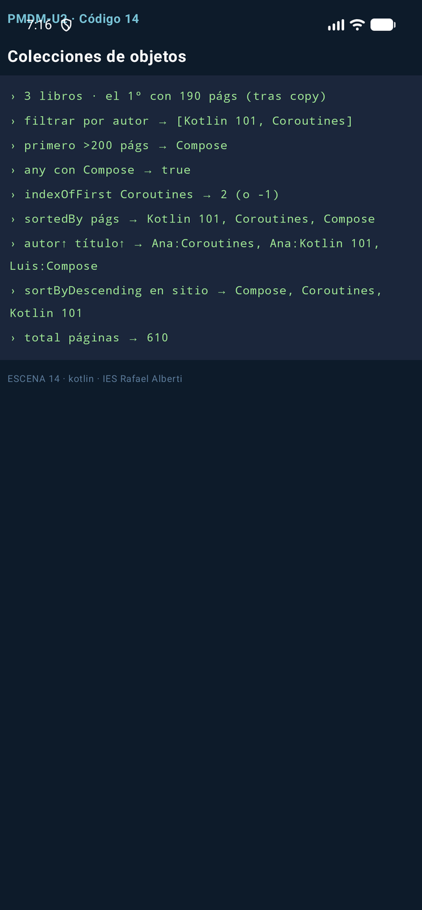
Fíjate en el patrón filter → map → joinToString: filtrar, transformar, presentar. Es la columna vertebral de cualquier pantalla de listado Android (RecyclerView/LazyColumn) que montaréis este curso.
17. Buenas prácticas de estilo
| Aspecto | Convención | Ejemplo |
|---|---|---|
| Nombre de variables | sustantivo, minúsculas, camelCase | velocidad, numeroCuentas |
| Nombres booleanos | adjetivo, o sufijos is/has/can |
isReady, hasPermisos |
| Funciones | verbo en infinitivo | calcularMedia(), validarDatos() |
| Números mágicos | en constante nombrada | private val IVA = 1.21 |
| Nulabilidad | preferir no-nullable; manejar antes de usar | val x: String? = ...; x?.uso() ?: defecto |
| Constantes reales | const val en mayúsculas |
const val MAX_INTENTOS = 3 |
| Comentarios | explican el porqué, no el qué | // margen legal: art. X |
18. Errores frecuentes
| Error | Síntoma | Arreglo |
|---|---|---|
Confundir ? con !! |
NPE pese al ? |
el ? protege; el !! apuesta |
filter esperando mutación |
"no me ha quitado nada" | filter devuelve otra lista |
Usar values() en enums nuevos |
deprecado | entries |
Olvidar open |
"abrir de... es final" | open en base, override en derivada |
== pensando en referencias |
compara contenidos | === para identidad |
Comparar con equals en sortedBy |
orden lexicográfico sorpresivo | compareBy(...)thenBy(...), compareTo |
sortedBy vs sortBy |
sortBy no existe en inmutables |
sortedBy devuelve copia |
| Puntos y comas "a lo Java" | ruido | línea = sentencia; ; solo para partir líneas |
19. Test de autoevaluación
- ¿Qué imprime
val x: Int? = null; println(x?.toString() ?: "nada")? - Diferencia entre
sortedByysortBy: ¿cuál existe en unaListinmutable? - ¿Por qué
mapOf("a" to 1)["z"]no lanza excepción perolistOf(1)[9]sí? - ¿Qué te da
data classque una clase normal no tiene? - ¿Cuándo un
whenno necesitaelse? ::esPardentro defilter— ¿qué es y qué alternativa equivalente hay?- ¿Qué hace
require(condición) { msg }y qué lanza? - ¿Por qué la regla de oro es
valpor defecto?
Respuestas
nada(safe call → null; Elvis activa el rescate). 2.sortedBydevuelve una copia ordenada —existe en inmutables—;sortByordena en sitio y solo existe enMutableList. 3. Los mapas devuelvennullante clave inexistente; las listas lanzanIndexOutOfBounds. 4.equals/hashCode/toString/copy/componentNgenerados. 5. Cuando el compilador puede probar que cubres todos los casos (enums con todas sus constantes, o sellados). 6. Una referencia a función; la alternativa esfilter { esPar(it) }. 7. Comprueba la precondición y lanzaIllegalArgumentExceptioncon el mensaje si falla. 8. Porque lo inmutable es más seguro, legible y trivialmente concurrente.
20. Para terminar
Siguiente: Tema 3.1 - Ciclo de vida de las aplicaciones (próxima unidad) — dónde vive realmente una app Android y qué pasa cuando alguien te llama por teléfono a mitad.
Recursos: Sintaxis · Null-safety · Colecciones · Guía Java→Kotlin
-
:octicons-book-24{ .lg } Ampliación
Repasa el Tema 1 para poner el lenguaje en contexto: dónde corre Kotlin dentro del sistema Android.